Best Nature & City Attractions in Visayas
| 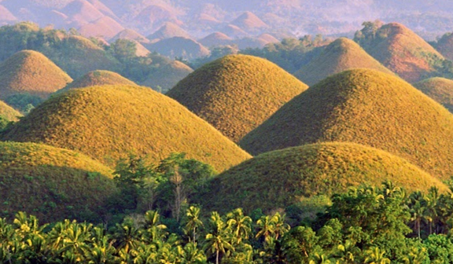 |
| Chocolate Hills |
| The Chocolate Hills are a group of various shaped hills which turns chocolate-brown when the grass dries
at the end of the season—making the entire landscape look like rows of chocolate kisses. It is declared as a National Geological Monument because of its
extraordinary formation. It is unknown how many chocolate hills are there, but some estimates are around 1,776.
|
| Location: Carmen, Bohol |
| Ratings: ★★★★★ |
| 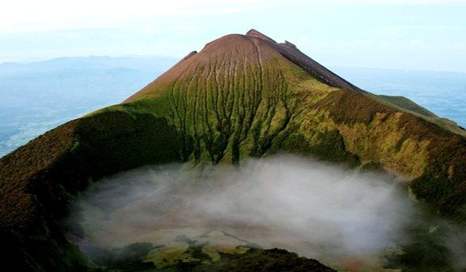 |
| Mount Kanlaon |
| Mount Kanlaon is one of the country’s most active stratovolcanoes and is also the
highest mountain on Negros where you’ll find rich vegetations and dense rainforests. Climbing to the top of the mountain is challenging,
but the view is more than worth it. The Mount Canlaon Natural Park is also home to numerous wildlife creatures such as the hawk eagle, wild boars, and leopard cats.
|
| Location: Negros Occidental and Negros Oriental |
| Ratings: ★★★★★ |
| 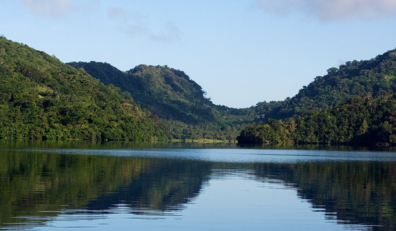 |
| Lake Danao |
| This guitar-shaped lake is located on the island of Leyte in the Visayas region. Just like Taal Volcano in Batangas city,
this picturesque scene was formed after a volcanic eruption. Experience the cool and relaxing fresh air because of its high-elevation—which is similar to Tagaytay’s.
For extra ecotourism adventures, you may choose to enjoy fishing, camping, and boating in wooden canoes.
|
| Location: Ormoc, Leyte |
| Ratings: ★★★★★ |
| 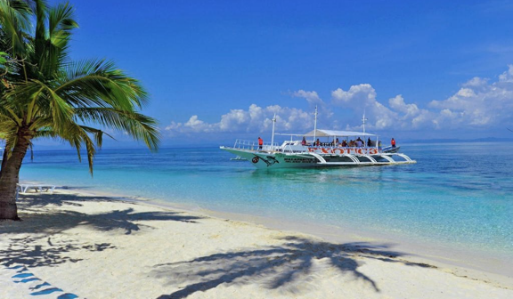 |
| Malapascua Island |
| This place is ideal for you if you want to have the best underwater experience.
Malapascua Island is famous for its diving site because of its rich marine sanctuary. It is also known for its thresher sharks which can be seen regularly.
Diving or snorkeling is not only the island offers, you may also sit back and just enjoy the fine white sands and beautiful sceneries.
|
| Location: Cebu |
| Ratings: ★★★★★ |
| 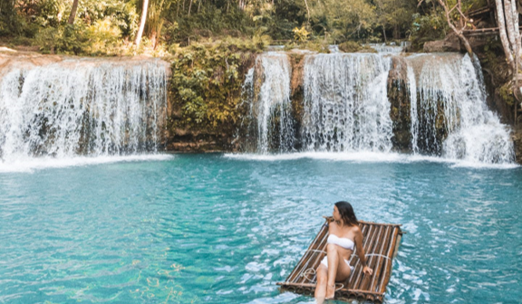 |
| Cambugahay Falls |
| Cambugahay Falls, in the municipality of Lazi, Siquijor, is regarded as one of the Philippines' most beautiful waterfalls.
Tourists go to Cambugahay Falls because of its turquoise, pure, and warm water, which comes from natural springs. The water will urge you to dive in as soon as you see it.
Jump off the cliff or use the swing to dive into the sea for a more adventurous experience.
|
| Location: Lazi, Siquijor |
| Ratings: ★★★★★ |
| 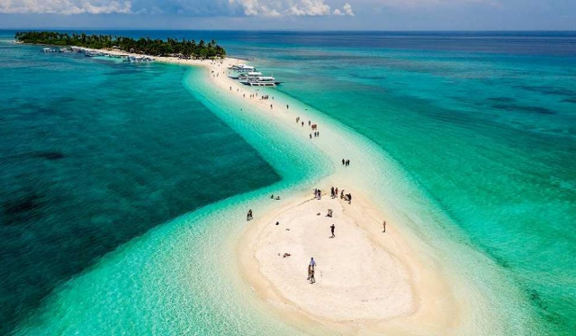 |
| Kalanggaman Island |
| The island of Kalanggaman in Leyte is claimed to be a smaller counterpart of Boracay. Its picturesque sandbars and lack of
tourists distinguish it from other beaches. The island is a great area to relax and cool off in the ocean. Kayaks and paddleboards can also be rented.
|
| Location: Palompon, Leyte |
| Ratings: ★★★★★ |
| 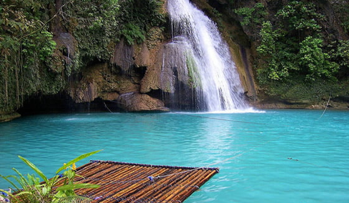 |
| Kawasan Falls |
| Kawasan Falls is a three-tier waterfall of pure turquoise water that falls from the Mantalongon mountain range's
mountain springs and is one of Cebu's most popular tourist attractions. Aside from its natural beauty, Kawasan Falls has become well-known for hosting one of Cebu's
most popular activities: canyoneering. The canyoneering journey begins with Canlaob Falls and continues downstream to Kawasan Falls. All tourists are accompanied
by local certified guides who support activities such as strolling, jumping, swimming, climbing, and abseiling through the streams.
|
| Location: Badian, Cebu |
| Ratings: ★★★★★ |
| 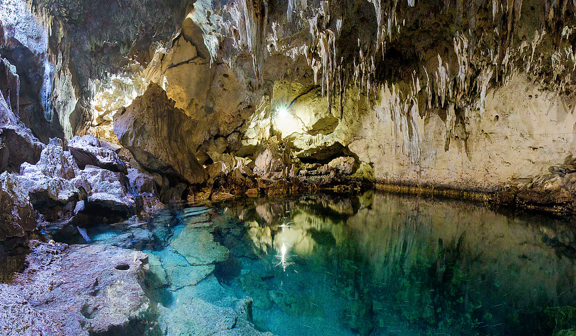 |
| Hinagdanan Cave |
| Hinagdanan Cave is without a doubt one of the most magnificent tourist sites in Bohol. It has a clear water pool where
you can swim among the beautiful stalactites and stalagmites. It is said to have been discovered by accident by a farmer who built a ladder to access the cave, hence the name.
The light streams through the cave entrance, casting a relaxing and unearthly glow over the entire area.
|
| Location: Bingag, Dauis, Bohol |
| Ratings: ★★★★★ |
| 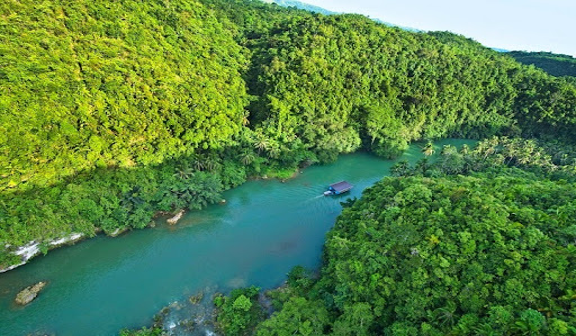 |
| Loboc River |
| Here in Loboc River, enjoy the cruise as you explore the river. Tourist operators frequently bring their guests here for lunch.
Your ship will stop in the midst of the tour at a location where locals will perform traditional dances and play musical instruments. Make sure to include the Loboc River in your
itinerary because it is one of Visayas’ most picturesque destinations.
|
| Location: Carmen, Bohol |
| Ratings: ★★★★★ |
| 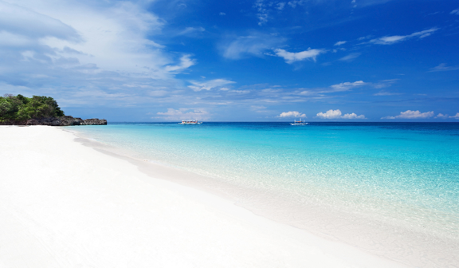 |
| Boracay |
| Boracay is not only the famous attraction here in Visayas, but it’s also popular in the whole world.
Boracay will fascinate you with its finest white sand, cerulean waters, glorious sceneries, entertaining water activities, and spectacular nightlife.
|
| Location: Malay, Aklan |
| Ratings: ★★★★★ |
| 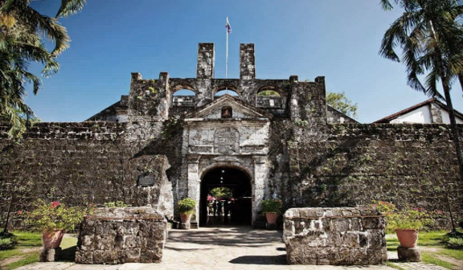 |
| Fort San Pedro |
| Fort San Pedro is known as the oldest fort in the Philippines. It was a military defense structure built by
the Spaniards under the command of Miguel López de Legazpi. It contains historical artifacts and documents during the Spanish colonization in the Philippines.
Make sure you visit this place when you’re in Cebu and bring a camera to take pictures within the fort.
|
| Location: Cebu City |
| Ratings: ★★★★★ |
| 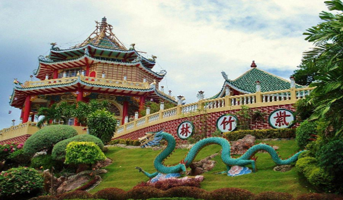 |
| Cebu Taoist Temple |
| The Cebu Taoist Temple was established by Cebu's large Chinese community in 1972. This temple is made up of two temples:
one is the Phu Sian Temple, which is not open to the public and was built by another Chinese group, and the other is the main temple, which is 270 meters above sea level.
The main temple is open to both worshippers and non-worshippers. The temple's entrance is a copy of China's Great Wall. The temple includes a chapel, library, souvenir shop,
and a wishing well. It also features a large balcony that brings you the beautiful views of the cityscape.
|
| Location: Cebu City |
| Ratings: ★★★★★ |
| 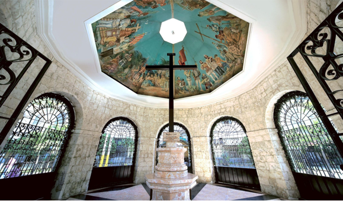 |
| Magellan’s Cross |
| Magellan’s Cross is a historical artifact that signifies the beginning of Christianity in the Philippines when it was
introduced to us by the Spaniards. It began when the Portuguese explorer Ferdinand Magellan set his foot in Cebu back in 1521 and planted this cross. This place became a
famous attraction to the locals and foreigners because of its historical value.
|
| Location: Cebu City |
| Ratings: ★★★★★ |
| 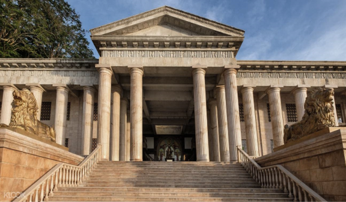 |
| Temple of Leah |
| This magnificent structure has been attracting visitors ever since it was built. The history of this structure begins
with the love story of a couple where the husband, Teodorico Adarna kept his promise about the request of his wife, Leah on storing all her collections in one place.
It contains a museum and an art gallery with books and other important antiques to see. Make sure to bring your camera and take pictures of this sophisticated structure.
Although the temple is still under construction, it was already open for the public to see.
|
| Location: Cebu City |
| Ratings: ★★★★★ |
| 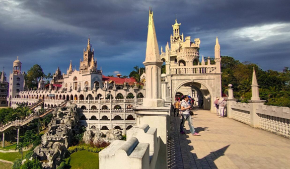 |
| Simala Shrine |
| The Simala Shrine is a magnificent castle and religious institution that is one of the Philippines' most famous sites.
It is also known as the “Monastery of the Holy Eucharist" or "Simala Church." The beautiful frontage of this massive structure is made up of winding staircases,
jagged terraces, and arched balconies. Gaze at the multifaceted layout of the castle's façade as well as the structure's sheer size.
|
| Location: Simala, Sibonga, Cebu |
| Ratings: ★★★★☆ |
| 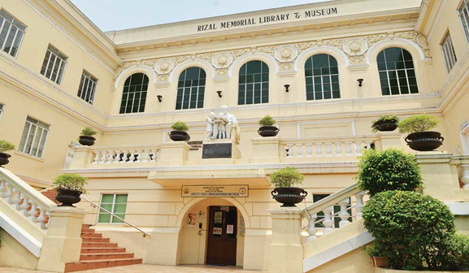 |
| Rizaliana Museum |
| The Rizaliana Museum was founded around 1952 when Dr. Jose Rizal's sister, Doña Trinidad, visited Cebu and brought
the late hero's personal possessions with her. She gave them all to the museum, which eventually grew into the Philippines' largest collection of Rizal's artifacts.
The museum consists of rare collections such as his wardrobe, letters to his colleagues and friends, and many more. This place is definitely an attraction to historians
or history enthusiasts.
|
| Location: Cebu City |
| Ratings: ★★★★★ |
| 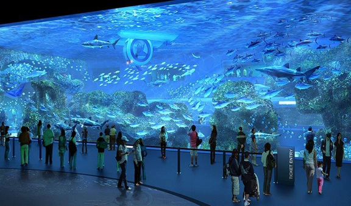 |
| Cebu Ocean Park |
| Cebu Ocean Park covers a 1-hectare space, which is larger than Manila Ocean Park.The park's size allows it to host
roughly 200 different animal species. The park offers a lot of attractions that contain a variety of birds, insects, and reptiles, with the majority of the animals
being marine creatures. Entrance fees may vary occassionaly, so make sure to always check their official website.
|
| Location: Cebu City |
| Ratings: ★★★★★ |
| 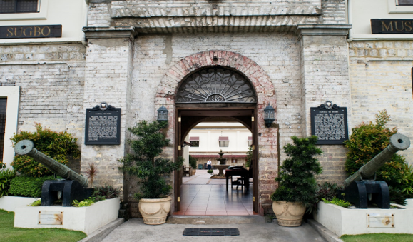 |
| Museo Sugbo |
| The old Cebu Provincial Detention and Rehabilitation Center (CPDRC) now houses Museo Sugbo.
The CPDRC was relocated to a larger, more modern facility in December 2004. And it was eventually transformed into the Museo Sugbo, a storehouse dedicated to Cebuano heritage.
There are four galleries at the Museo that are split between two buildings, which is the Philippine Political History and Presidential Gallery.
The Political History Gallery depicts the country's political history from the early days of Filipino communities to the present day. While the Presidential Gallery
consists of the Philippine presidents' images and signatures that are inscribed in a 24-karat gold plated metal. The PPH's other two galleries are located on the
opposite side of the building. These galleries contains various archeological items from Cebu excavations, including gold and ceramics from the renowned San Diego
shipwreck of 1600. And take note that taking pictures and videos inside the galleries are strictly prohibited.
|
| Location: Cebu City |
| Ratings: ★★★★★ |
| 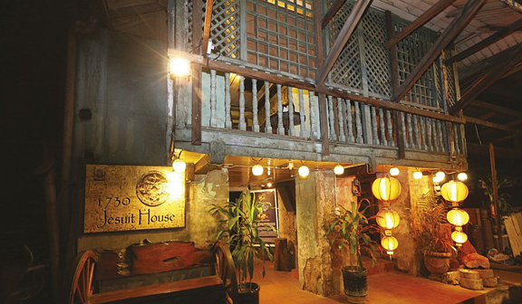 |
| Museo De Parian |
| The Museo De Parian, which was established centuries ago, is possibly one of the country's oldest houses.The home was
thought to have been built in the 1730s based on various artifacts at the Museo De Parian. However, historians and architects recently gathered evidence that Museo De Parian
was constructed prior to the 1730s, while the exact year of construction is still unknown.The ground level has since been turned into the Sugbo Gallery, a miniature museum.
Maps of historic Cebu and pictures of Cebu in the past are on display in the gallery. The photographs of Calle Colon and other antique churches in Southern Cebu are fascinating.
The gallery also has a mini-museum with objects thought to have been brought by Chinese traders during the Ming Dynasty.
|
| Location: Cebu City |
| Ratings: ★★★★★ |
| 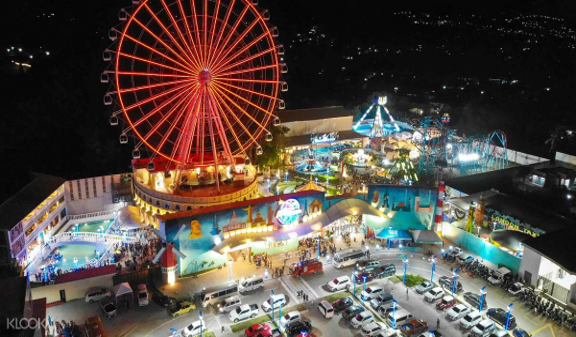 |
| Anjo World Theme Park |
Anjo World Theme Park is Cebu’s first amusement park. It’s one of the best destinations to experience thrilling rides
and attractions suitable for both families and friends. Age doesn’t matter in this place, simply enjoy and there’s definetly bound to be something here that
captivates your interest.
Entrance Fee:
P500/PAX (MONDAY TO THURSDAY)
P600/PAX (FRIDAY TO SUNDAY)
P700/PAX + Access to Snow World(MONDAY TO THURSDAY)
P800/PAX + Access to Snow World(FRIDAY TO SUNDAY & HOLIDAYS)
P250/PAX One time ride only on your 3 chosen rides
P450/PAX One time ride only on your 3 chosen rides + unlimited access to Snow World
P350/PAX Unlimited access to Snow World
|
| Location: Minglanilla, Cebu |
| Ratings: ★★★★☆ |
References
https://www.inspirock.com/philippines/natural-attractions-in-visayas • https://www.tripadvisor.com.ph/Attractions-g294258-Activities-c57-Visayas.html • https://www.zenrooms.com/blog/post/visayas-tourist-spots/ • https://www.trip.com/travel-guide/city-1453332/tourist-attractions/
 Lakbay
Lakbay